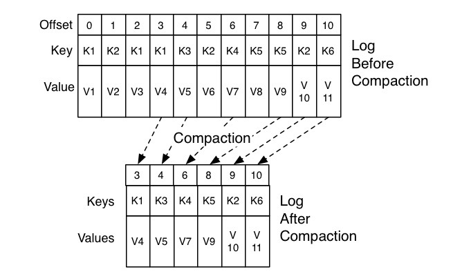
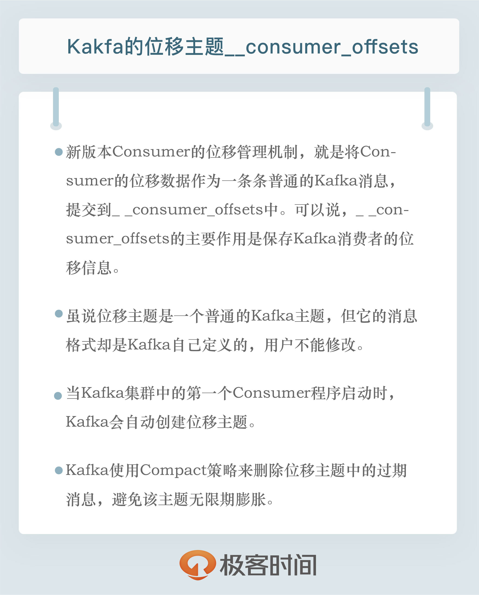

- 00 开篇词 为什么要学习Kafka？.md.html
- 01 消息引擎系统ABC.md.html
- 02 一篇文章带你快速搞定Kafka术语.md.html
- 03 Kafka只是消息引擎系统吗？.md.html
- 04 我应该选择哪种Kafka？.md.html
- 05 聊聊Kafka的版本号.md.html
- 06 Kafka线上集群部署方案怎么做？.md.html
- 07 最最最重要的集群参数配置（上）.md.html
- 08 最最最重要的集群参数配置（下）.md.html
- 09 生产者消息分区机制原理剖析.md.html
- 10 生产者压缩算法面面观.md.html
- 11 无消息丢失配置怎么实现？.md.html
- 12 客户端都有哪些不常见但是很高级的功能？.md.html
- 13 Java生产者是如何管理TCP连接的？.md.html
- 14 幂等生产者和事务生产者是一回事吗？.md.html
- 15 消费者组到底是什么？.md.html
- 16 揭开神秘的“位移主题”面纱.md.html
- 17 消费者组重平衡能避免吗？.md.html
- 18 Kafka中位移提交那些事儿.md.html
- 19 CommitFailedException异常怎么处理？.md.html
- 20 多线程开发消费者实例.md.html
- 21 Java 消费者是如何管理TCP连接的_.md.html
- 22 消费者组消费进度监控都怎么实现？.md.html
- 23 Kafka副本机制详解.md.html
- 24 请求是怎么被处理的？.md.html
- 25 消费者组重平衡全流程解析.md.html
- 26 你一定不能错过的Kafka控制器.md.html
- 27 关于高水位和Leader Epoch的讨论.md.html
- 28 主题管理知多少_.md.html
- 29 Kafka动态配置了解下？.md.html
- 30 怎么重设消费者组位移？.md.html
- 31 常见工具脚本大汇总.md.html
- 32 KafkaAdminClient：Kafka的运维利器.md.html
- 33 Kafka认证机制用哪家？.md.html
- 34 云环境下的授权该怎么做？.md.html
- 35 跨集群备份解决方案MirrorMaker.md.html
- 36 你应该怎么监控Kafka？.md.html
- 37 主流的Kafka监控框架.md.html
- 38 调优Kafka，你做到了吗？.md.html
- 39 从0搭建基于Kafka的企业级实时日志流处理平台.md.html
- 40 Kafka Streams与其他流处理平台的差异在哪里？.md.html
- 41 Kafka Streams DSL开发实例.md.html
- 42 Kafka Streams在金融领域的应用.md.html
- 加餐 搭建开发环境、阅读源码方法、经典学习资料大揭秘.md.html
- 用户故事 黄云：行百里者半九十.md.html
- 结束语 以梦为马，莫负韶华！.md.html
- 捐赠
16 揭开神秘的“位移主题”面纱
你好，我是胡夕。今天我要和你分享的内容是：Kafka中神秘的内部主题（Internal Topic）__consumer_offsets。
consumer_offsets在Kafka源码中有个更为正式的名字，叫位移主题，即Offsets Topic。为了方便今天的讨论，我将统一使用位移主题来指代consumer_offsets。需要注意的是，它有两个下划线哦。
好了，我们开始今天的内容吧。首先，我们有必要探究一下位移主题被引入的背景及原因，即位移主题的前世今生。
在上一期中，我说过老版本Consumer的位移管理是依托于Apache ZooKeeper的，它会自动或手动地将位移数据提交到ZooKeeper中保存。当Consumer重启后，它能自动从ZooKeeper中读取位移数据，从而在上次消费截止的地方继续消费。这种设计使得Kafka Broker不需要保存位移数据，减少了Broker端需要持有的状态空间，因而有利于实现高伸缩性。
但是，ZooKeeper其实并不适用于这种高频的写操作，因此，Kafka社区自0.8.2.x版本开始，就在酝酿修改这种设计，并最终在新版本Consumer中正式推出了全新的位移管理机制，自然也包括这个新的位移主题。
新版本Consumer的位移管理机制其实也很简单，就是将Consumer的位移数据作为一条条普通的Kafka消息，提交到consumer_offsets中。可以这么说，consumer_offsets的主要作用是保存Kafka消费者的位移信息。它要求这个提交过程不仅要实现高持久性，还要支持高频的写操作。显然，Kafka的主题设计天然就满足这两个条件，因此，使用Kafka主题来保存位移这件事情，实际上就是一个水到渠成的想法了。
这里我想再次强调一下，和你创建的其他主题一样，位移主题就是普通的Kafka主题。你可以手动地创建它、修改它，甚至是删除它。只不过，它同时也是一个内部主题，大部分情况下，你其实并不需要“搭理”它，也不用花心思去管理它，把它丢给Kafka就完事了。
虽说位移主题是一个普通的Kafka主题，但它的消息格式却是Kafka自己定义的，用户不能修改，也就是说你不能随意地向这个主题写消息，因为一旦你写入的消息不满足Kafka规定的格式，那么Kafka内部无法成功解析，就会造成Broker的崩溃。事实上，Kafka Consumer有API帮你提交位移，也就是向位移主题写消息。你千万不要自己写个Producer随意向该主题发送消息。
你可能会好奇，这个主题存的到底是什么格式的消息呢？所谓的消息格式，你可以简单地理解为是一个KV对。Key和Value分别表示消息的键值和消息体，在Kafka中它们就是字节数组而已。想象一下，如果让你来设计这个主题，你觉得消息格式应该长什么样子呢？我先不说社区的设计方案，我们自己先来设计一下。
首先从Key说起。一个Kafka集群中的Consumer数量会有很多，既然这个主题保存的是Consumer的位移数据，那么消息格式中必须要有字段来标识这个位移数据是哪个Consumer的。这种数据放在哪个字段比较合适呢？显然放在Key中比较合适。
现在我们知道该主题消息的Key中应该保存标识Consumer的字段，那么，当前Kafka中什么字段能够标识Consumer呢？还记得之前我们说Consumer Group时提到的Group ID吗？没错，就是这个字段，它能够标识唯一的Consumer Group。
说到这里，我再多说几句。除了Consumer Group，Kafka还支持独立Consumer，也称Standalone Consumer。它的运行机制与Consumer Group完全不同，但是位移管理的机制却是相同的。因此，即使是Standalone Consumer，也有自己的Group ID来标识它自己，所以也适用于这套消息格式。
Okay，我们现在知道Key中保存了Group ID，但是只保存Group ID就可以了吗？别忘了，Consumer提交位移是在分区层面上进行的，即它提交的是某个或某些分区的位移，那么很显然，Key中还应该保存Consumer要提交位移的分区。
好了，我们来总结一下我们的结论。位移主题的Key中应该保存3部分内容：
接下来，我们再来看看消息体的设计。也许你会觉得消息体应该很简单，保存一个位移值就可以了。实际上，社区的方案要复杂得多，比如消息体还保存了位移提交的一些其他元数据，诸如时间戳和用户自定义的数据等。保存这些元数据是为了帮助Kafka执行各种各样后续的操作，比如删除过期位移消息等。但总体来说，我们还是可以简单地认为消息体就是保存了位移值。
当然了，位移主题的消息格式可不是只有这一种。事实上，它有3种消息格式。除了刚刚我们说的这种格式，还有2种格式：
- 用于保存Consumer Group信息的消息。
- 用于删除Group过期位移甚至是删除Group的消息。
第1种格式非常神秘，以至于你几乎无法在搜索引擎中搜到它的身影。不过，你只需要记住它是用来注册Consumer Group的就可以了。
第2种格式相对更加有名一些。它有个专属的名字：tombstone消息，即墓碑消息，也称delete mark。下次你在Google或百度中见到这些词，不用感到惊讶，它们指的是一个东西。这些消息只出现在源码中而不暴露给你。它的主要特点是它的消息体是null，即空消息体。
那么，何时会写入这类消息呢？一旦某个Consumer Group下的所有Consumer实例都停止了，而且它们的位移数据都已被删除时，Kafka会向位移主题的对应分区写入tombstone消息，表明要彻底删除这个Group的信息。
好了，消息格式就说这么多，下面我们来说说位移主题是怎么被创建的。通常来说，当Kafka集群中的第一个Consumer程序启动时，Kafka会自动创建位移主题。我们说过，位移主题就是普通的Kafka主题，那么它自然也有对应的分区数。但如果是Kafka自动创建的，分区数是怎么设置的呢？这就要看Broker端参数offsets.topic.num.partitions的取值了。它的默认值是50，因此Kafka会自动创建一个50分区的位移主题。如果你曾经惊讶于Kafka日志路径下冒出很多__consumer_offsets-xxx这样的目录，那么现在应该明白了吧，这就是Kafka自动帮你创建的位移主题啊。
你可能会问，除了分区数，副本数或备份因子是怎么控制的呢？答案也很简单，这就是Broker端另一个参数offsets.topic.replication.factor要做的事情了。它的默认值是3。
总结一下，如果位移主题是Kafka自动创建的，那么该主题的分区数是50，副本数是3。
当然，你也可以选择手动创建位移主题，具体方法就是，在Kafka集群尚未启动任何Consumer之前，使用Kafka API创建它。手动创建的好处在于，你可以创建满足你实际场景需要的位移主题。比如很多人说50个分区对我来讲太多了，我不想要这么多分区，那么你可以自己创建它，不用理会offsets.topic.num.partitions的值。
不过我给你的建议是，还是让Kafka自动创建比较好。目前Kafka源码中有一些地方硬编码了50分区数，因此如果你自行创建了一个不同于默认分区数的位移主题，可能会碰到各种各样奇怪的问题。这是社区的一个Bug，目前代码已经修复了，但依然在审核中。
创建位移主题当然是为了用的，那么什么地方会用到位移主题呢？我们前面一直在说Kafka Consumer提交位移时会写入该主题，那Consumer是怎么提交位移的呢？目前Kafka Consumer提交位移的方式有两种：自动提交位移和手动提交位移。
Consumer端有个参数叫enable.auto.commit，如果值是true，则Consumer在后台默默地为你定期提交位移，提交间隔由一个专属的参数auto.commit.interval.ms来控制。自动提交位移有一个显著的优点，就是省事，你不用操心位移提交的事情，就能保证消息消费不会丢失。但这一点同时也是缺点。因为它太省事了，以至于丧失了很大的灵活性和可控性，你完全没法把控Consumer端的位移管理。
事实上，很多与Kafka集成的大数据框架都是禁用自动提交位移的，如Spark、Flink等。这就引出了另一种位移提交方式：手动提交位移，即设置enable.auto.commit = false。一旦设置了false，作为Consumer应用开发的你就要承担起位移提交的责任。Kafka Consumer API为你提供了位移提交的方法，如consumer.commitSync等。当调用这些方法时，Kafka会向位移主题写入相应的消息。
如果你选择的是自动提交位移，那么就可能存在一个问题：只要Consumer一直启动着，它就会无限期地向位移主题写入消息。
我们来举个极端一点的例子。假设Consumer当前消费到了某个主题的最新一条消息，位移是100，之后该主题没有任何新消息产生，故Consumer无消息可消费了，所以位移永远保持在100。由于是自动提交位移，位移主题中会不停地写入位移=100的消息。显然Kafka只需要保留这类消息中的最新一条就可以了，之前的消息都是可以删除的。这就要求Kafka必须要有针对位移主题消息特点的消息删除策略，否则这种消息会越来越多，最终撑爆整个磁盘。
Kafka是怎么删除位移主题中的过期消息的呢？答案就是Compaction。国内很多文献都将其翻译成压缩，我个人是有一点保留意见的。在英语中，压缩的专有术语是Compression，它的原理和Compaction很不相同，我更倾向于翻译成压实，或干脆采用JVM垃圾回收中的术语：整理。
不管怎么翻译，Kafka使用Compact策略来删除位移主题中的过期消息，避免该主题无限期膨胀。那么应该如何定义Compact策略中的过期呢？对于同一个Key的两条消息M1和M2，如果M1的发送时间早于M2，那么M1就是过期消息。Compact的过程就是扫描日志的所有消息，剔除那些过期的消息，然后把剩下的消息整理在一起。我在这里贴一张来自官网的图片，来说明Compact过程。

图中位移为0、2和3的消息的Key都是K1。Compact之后，分区只需要保存位移为3的消息，因为它是最新发送的。
Kafka提供了专门的后台线程定期地巡检待Compact的主题，看看是否存在满足条件的可删除数据。这个后台线程叫Log Cleaner。很多实际生产环境中都出现过位移主题无限膨胀占用过多磁盘空间的问题，如果你的环境中也有这个问题，我建议你去检查一下Log Cleaner线程的状态，通常都是这个线程挂掉了导致的。
小结
总结一下，今天我跟你分享了Kafka神秘的位移主题__consumer_offsets，包括引入它的契机与原因、它的作用、消息格式、写入的时机以及管理策略等，这对我们了解Kafka特别是Kafka Consumer的位移管理是大有帮助的。实际上，将很多元数据以消息的方式存入Kafka内部主题的做法越来越流行。除了Consumer位移管理，Kafka事务也是利用了这个方法，当然那是另外的一个内部主题了。
社区的想法很简单：既然Kafka天然实现了高持久性和高吞吐量，那么任何有这两个需求的子服务自然也就不必求助于外部系统，用Kafka自己实现就好了。

开放讨论
今天我们说了位移主题的很多好处，请思考一下，与ZooKeeper方案相比，它可能的劣势是什么？
欢迎写下你的思考和答案，我们一起讨论。如果你觉得有所收获，也欢迎把文章分享给你的朋友。
© 2019 - 2023 Liangliang Lee. Powered by gin and hexo-theme-book.